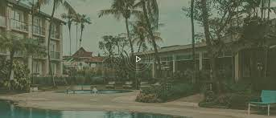

hardy’s World contain brand, an oxymoron, a father and son duo and an ever growing legacy of unabashed hospitality and glee. It was founded in 2004 as a waterpark and amusement rides, with theme based on jungle.
Coming from a background in hospitality Mr. Rakesh Chhabra and Mr. Tarun Chhabra together has expanded Hardy’s World by vision to create leisure facility and pleasant day out for guests, by carefully planning and offering something new every year whilst maintaining a high profile in the leisure industry. It offers thrill, amusement, dining, rides and more spread across 20 acres of fun over cool blue water and lush gardens.
Make Time for Enjoyment
One Water Park. One Price
For Information
+91-88720-45905
Gurudwara Shri Manji Sahib, Alamgir
GURUDWARA SHRI MANJI SAHIB (ALAMGIR SAHIB) is situated in the Village Alamgir In Distt Ludhiana. SHRI GURU GOBIND SINGH JI, after his four sons & mother were martyred by the Mughals, was going from Machhiwara on a bed as ” Uchh Da Pir” & reached here on 14 Poh 1761 Bikrami (1704 A.D.). On reaching here, one of the horse traders of the village named Bhai Nigahia Singh, gifted a horse to GURU SAHIB. Nabi Khan & Gani Khan were sent back with the bed. GURU SAHIB asked an old lady who was picking cow dung whether he could get some water from somewhere to take bath to which the old lady replied that ” Pir Ji this is a place of ruins, there is no water here. There is a well far away but there is a big python that lives there, no one goes there. GURU SAHIB Ji hit the python with an arrow & gave it “Mukti” ( exemption from further transmigration) & the python fell into the well. When the Sikhs went to fetch water, the water had gone bad so close to where GURU SAHIB was sitting, GURU SAHIB hit one more arrow & there was a water spring that came out & all the sikhs had a bath. On seeing this miracle, the old lady fell into GURU SAHIB’s feet & said “Peer Ji you are a wonderful Peer, I have a request. I have leprosy & I have gone to various places to get the treatment done but it has not been cured, kindly cure my disease & help me to get rid of this disease. GURU SAHIB said that whoever takes a bath under this water spring with belief, GOD will cure all his sadness. Then GURU JI sat on the horse given by Bhai Nigahia Singh & went towards Raikot. The old lady had a bath in that water spring & was cured. She went back to the village & told about the whole story. The place where Bhai Nabi Khan & Bhai Gani Khan kept GURU SAHIB’s bed, today at that place exists a beautiful Gurudwara known as Manji Sahib
LODHI FORT (PURANA QILA)
The Lodhi Fort (Punjabi: ਪੁਰਾਣਾ ਕਿਲਾ, romanized: Purāṇā Kila, lit. 'Old Fort') is a citadel in the city of Ludhiana, Punjab, India. The fortress is located on the banks of the river Sutlej and contains a tunnel to leading to the neighboring town of Phillaur. It was built over 500 years ago during the reign of the Sikandar Lodi and was well-maintained under the reign of Ranjit Singh and the British after him, but then fell into disrepair. It was declared a state-protected monument in December 2013.[1][2][3][4][5]
The Government Institute of Textile Chemistry and Knitting Technology was initially based in the fort campus which is now shifted to the new address at Z - Block, Rishi Nagar, Ludhiana.
THE BORGO- LUXURY HALL

Riding through the busy streets of Ludhiana, Ludhiana‘s most talked about dinner and wedding venue presents itself amidst the hustle bustle. The elegant entrance sets the tone for the astonishing story that follows.
Private Dining Spaces
4 Spectacular Cottages to host Private Parties
Unique Waterbody in the Property with Greener
Banquets for Exhibitions and Weddings
Open Bar
live Music Performances
IMFORMATION
Contact Us
Terms & Privacy
Do Not Sell My Personal Information
Register your business
About Us
Editorial Team & Policies
Careers
Offers you'd not like to refuse!
Don't miss out on our unbeatable offers - from discounted admission tickets to special package deals, we have something that you won't be able to resist!